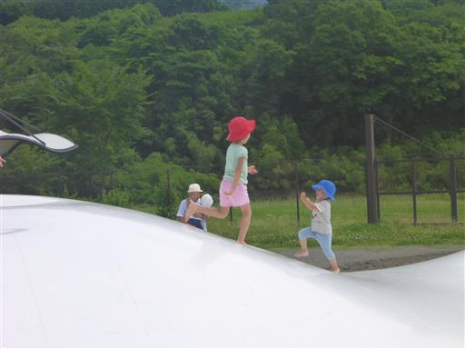
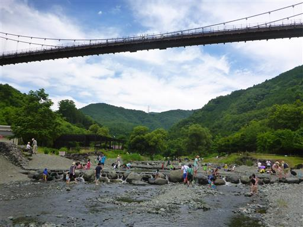
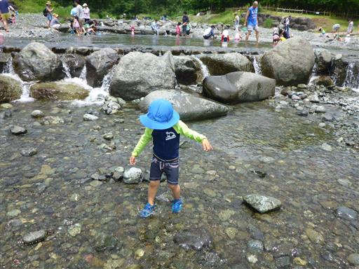
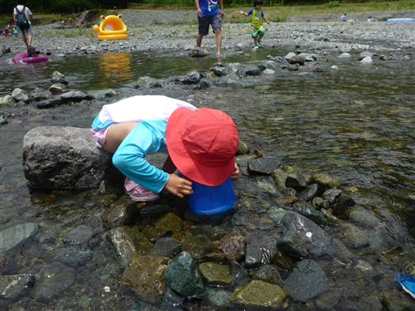
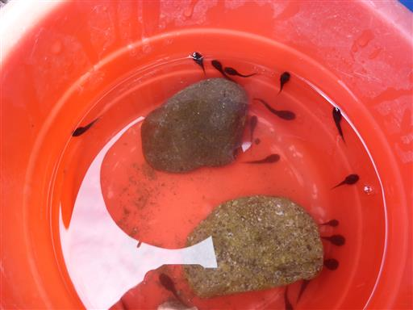

秦野戸川公園
| 日付 | 2016年6月26日（日） |
|---|---|
| メンバー | 家族（長女・5歳、長男・3歳） |
| アクセス | 車 |
先週山に行ったので、今週のお出かけは妻はパス。
天気はそこそこ晴れそうなので、子供とどこかに出かけることにする。
行先は秦野戸川公園にする。3年前に一度行った場所で川遊びができる。
公園内は広い。子供たちは川に辿り着く前にトランポリンに引っかかっている。

水無川に到着する。頭上に見えるのは風の吊り橋だ。

川に入ろうとしてサンダルを持ってくるのを忘れたことに気付く。
裸足で入ってみたが足が痛いため、靴を犠牲にすることにする。

水中を覗く道具を持って来たが水が浅すぎてあまり役に立たない。
それでも娘は熱心に覗き込んでいる。

この時期はおたまじゃくしが多い。もっぱらおたまじゃくしを捕まえて遊ぶ。
水遊びで暑さを避けられた週末だった。

他の記録